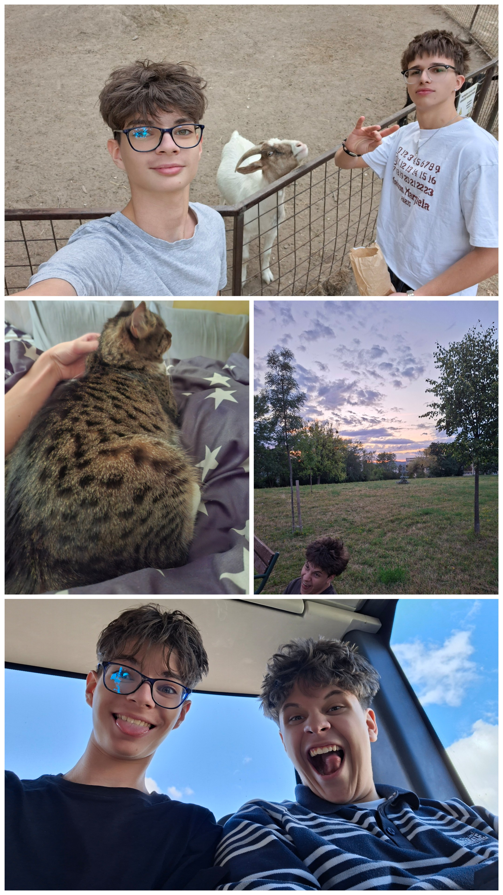

Gyökerestül Miskolci vagyok , 14 éves vagyok. Szeretek sportolni, videójátékokkal játszani illettve szeretem a vizet. 2012 március 19.-én születtem a Miskolci korházban. A Miskolci SZC Kandó Kálmán Informatikai és távközlési Technikumba járok. A könyves Kálmán Általános iskolából jöttem a Kandóba.
Érdekel az informatika viszont nem vagyok túl profi benne. A Kandó volt az az iskola ami a legjobban érdekelt plusz a legjobb barátom is ide jött. Az ösztöndíj is csábító volt.
